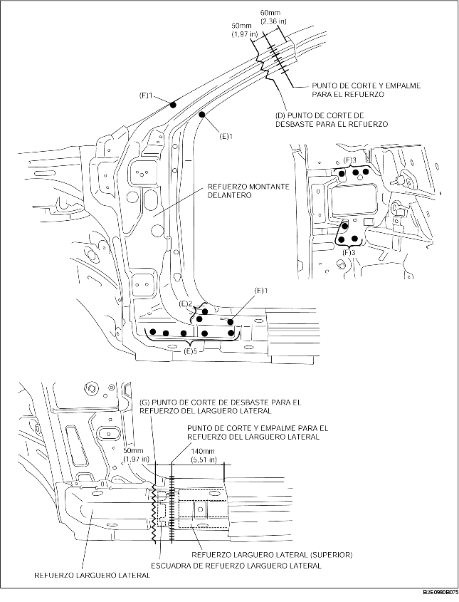
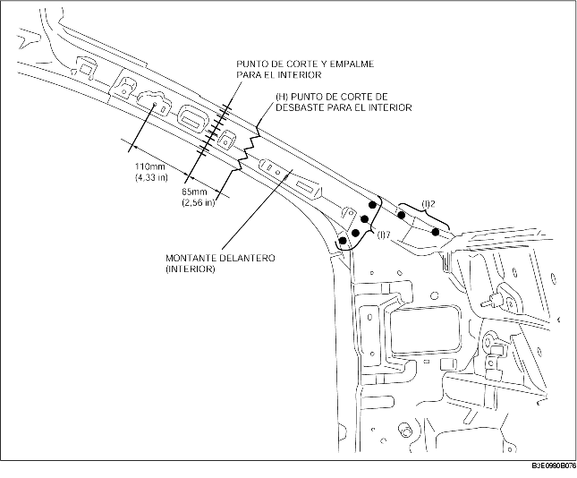

1. Efectuar el corte de desbaste en el área (A) y taladrar los 69 puntos indicados por (B).
2. Cuando se quita el montante delantero (exterior), el panel del capó puede interferir con el montante delantero (exterior) causando dificultades de remoción. Por lo tanto, taladrar los 2 puntos indicados por (C) y luego abrir el panel del capó hacia el exterior.
3. Quitar el montante delantero (exterior).
4. Efectuar el corte de desbaste en el área (D) y taladrar los 10 puntos indicados por (E).
5. Taladrar los 6 puntos indicados por (F) desde la parte inferior.
6. Quitar el refuerzo del montante delantero.
7. Efectuar el corte de desbaste en el área (G) y quitar el refuerzo del larguero lateral.

8. Efectuar el corte de desbaste en el área (H), taladrar los 9 puntos de soldadura indicados por (I), luego quitar el montante delantero (interior).
